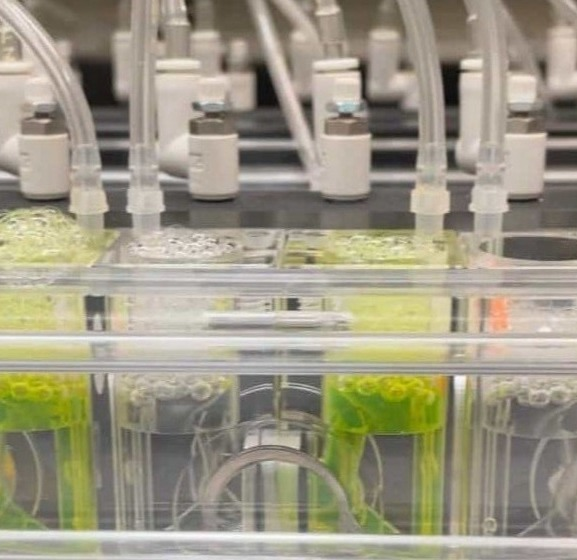
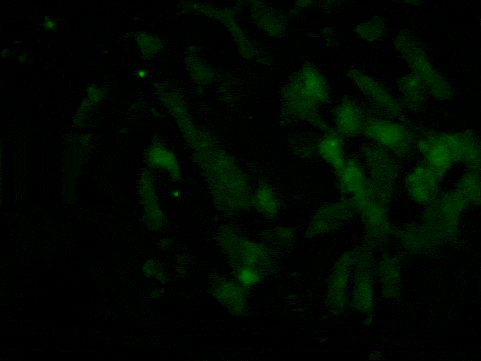
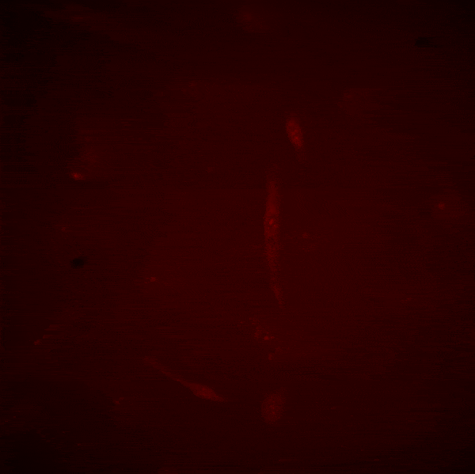
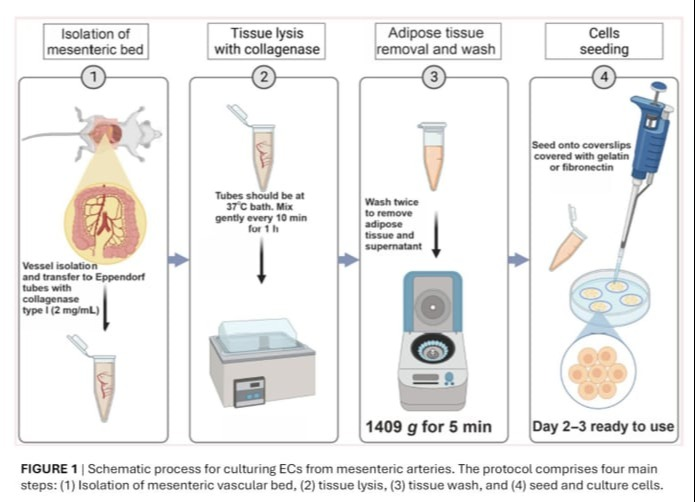
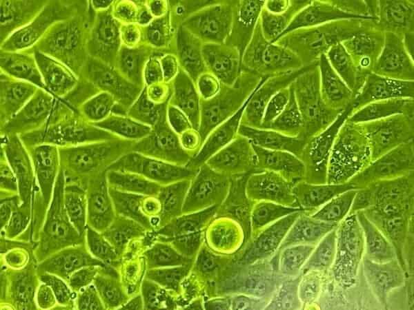

HTML Website Generator
Pia has a bachelor’s degree in biochemistry and a Ph.D. in biological science with a mention in physiological science from the Pontifical Catholic University of Chile.
She has experience in vascular physiology related to inflammatory signals in endothelial cells from post-capillary venules during a hyperpermeability response.
Currently, she is a Research Associate at Rutgers New Jersey Medical School in the laboratory of Mauricio A. Lillo. She studies cellular signaling in the inactivation of inflammation-induced hyperpermeability.
"None of us can know what we are capable of until we are tested"
Elizabeth Blackbell
The observation of biological processes within the physiological context of a living specimen using a microscope. We studied Hyperpermeability in vivo, by topical application of Inflammatory agonists (PAF or VEGF) or by Ischemia-reperfusion injury . FITC-Dextran 70 is used as a macromolecular tracer. The representative image shows the mouse mesentery vascular network loaded with FITC-dextran 70.

Endothelial monolayers seeded in transwells are placed in a diffusion chamber (NaviCyte Scientific, San Diego, CA). FITC-Dextran 70 is used as a macromolecular tracer (it mimics Albumin), and the permeability was determined according to the Fick equation. The representative image describes the navicyte chamber system, with the cells and FITC-dextran 70 loaded.

Changes in intracellular calcium concentration ([Ca2+]i) were detected using the fluorescent calcium indicator, Fluo 4-AM (Life Technologies, OR, USA) in the primary culture of mouse mesentery endothelial cells. The video displayed Fluo 4 detection after exposure to 10 nM PAF in mouse mesentery primary culture of endothelial cells.

Connexin hemichannel opening may be studied by measuring hemichannel-permeable molecule uptake, using ethidium bromide (EtdBr), whose uptake is proportional to hemichannel opening and exposure time. The video displayed EtBr uptake after exposure to 1 nM VEGF in mouse mesentery primary culture of endothelial cells.

Schematic process for culturing ECs from mesenteric arteries. The protocol comprises four main steps: (1) Isolation of mesenteric vascular bed, (2) tissue lysis, (3) tissue wash, and (4) seed and culture cells. The protocol and functional standardization using different matrix was publish in Microcirculation Journal. Burboa P.C. et al. Microcirculation 2024 Jul;31(5):e12859. PMID: 38818977

EAhy296 and CVEC grown in DMEM supplemented with FBS, L-glutamine, penicillin and streptomycin.
ECV-304 transfected with eNOS construct: ECV-GFPeNOS-G2A, ECV-GFPeNOS-CAAX, grown in DMEM supplemented with FBS, L-glutamine, penicillin, streptomycin and geneticin.
HMVEC and HUVEC from Lonza (Walkersville, MD). Cells were grown in EGMTM -2 MV Microvascular Endothelial Cell Growth Medium-2 BulletKitTM
rellenar
rellenar
rellenar
Research Associate - Rutgers New Jersey Medical School.
Postdoctoral Fellow - Rutgers New Jersey Medical School.
Doctoral dissertation - Pontifical Catholic University of Chile.
Ph.D. Research Unit - Pontifical Catholic University of Chile.
Research Assistant - Austral University of Chile.
Adjunt Professor of Physiology and Physiopathology Universidad de Las Américas (CL).
Physiology and Physiopathology Lecturer Universidad SEK (CL).
Science teacher in STEM Program “Young Science Fundation” - Fundación Ciencia Joven (CP).
Elementary School Science teacher - Betterland School (CL).
Diagnostic Laboratory Director: Salmon diagnostic diseases Laboratory S.A. Puerto Aysén, Chile. (2009 – 2012), Activities: Coordinates research and analysis activities according to applicable government regulations, interprets results of laboratory activities to laboratory personnel, Salmon farm industry, and prepares reports for Salmon farm industry and government control of Chilean export (SERNAPESCA).
Laboratory Analyst in Molecular Biology and Microbiology. Salmon diagnostic diseases Laboratory S.A. Puerto Aysén, Chile (2009) Activities: DNA and RNA extraction from biological samples of salmon (Heart, kidney, and gill), RTPCR, Microorganisms detection (Piscirickettsia salmonis,among others) from biological samples
Member of the Education Committee, North American Vascular Biology Organization (NAVBO)
Aug 2025 - Present.
Student Trainee Member, American Heart Association (AHA), 2022 to present.
Postdoctoral Trainee Member, American Physiological Society (APS), 2021 to present.
Member, National Postdoctoral Association (NPA), 2022 to present.
Member, Sociedad Chilena de Ciencias Fisiológicas (SCHCF) (Chilean Society of Physiological Sciences), 2022 to present.
Member, Asociación Latinoamericana de Ciencias Fisiológicas (ALACF) (Latin american Association of Physiological Sciences), 2022 to present.
Student Member, American Physiological Society (APS), 2019 – 2020.
Student Member, Sociedad Chilena de Ciencias Fisiológicas (SCHCF) (Chilean Society of Physiological Sciences), 2015 – 2016.
Pend
pend
Abstract
We previously demonstrated that the NO-receptor soluble guanylyl cyclase (GC1) has the ability to transnitrosate other proteins in a reaction that involves, in some cases, oxidized Thioredoxin 1 (oTrx1). This transnitrosation cascade was established in vitro and we identified by mass spectrometry and mutational analysis Cys 610 (C610) of GC1 α-subunit as a major donor of S-nitrosothiols (SNO). To assay the relevance of GC1 transnitrosation under physiological conditions and in oxidative pathologies, we studied a knock-in mouse in which C610 was replaced with a serine (KI αC610S) under basal or angiotensin II (Ang II)–treated conditions. Despite similar GC1 expression and NO-stimulated cGMP-forming activity, the Ang II-treated KI mice displayed exacerbated oxidative pathologies including higher mean arterial pressure and more severe cardiac dysfunctions compared to the Ang II-treated WT. These phenotypes were associated with a drastic decrease in global S-nitrosation and in levels of SNO-Trx1 and SNO-RhoA in the KI mice. To investigate the mechanism underlying the dysregulation of blood pressure despite an intact NO-cGMP axis, pressure myography and in vivo intravital microscopy were conducted to analyze the vascular resistance tone. Both approaches indicated that, even in the absence of oxidative stress, the single mutation C610S led to a significant deficiency in acetylcholine-induced vasorelaxation while smooth muscle relaxation in response to NO remained unchanged. These findings indicate that the C610S mutation uncoupled the two NO signaling pathways involved in the endothelium and smooth muscle vasorelaxation and suggest that GC1-dependent S-nitrosation is a key player in endothelium-derived hyperpolarization.
Read more
Abstract
Connexin-43 (Cx43) plays a critical role in the propagation of action potentials and cardiac contractility. In healthy cardiomyocytes, Cx43 is mainly located at the intercalated disk; however, Cx43 remodeling is observed in cardiac pathologies and is linked with arrhythmogenesis and sudden cardiac death. Using a mouse model of Duchenne muscular dystrophy (DMD), we previously demonstrated that Cx43 localizes to the lateral side of dystrophic cardiomyocytes, forming undocked hemichannels. β-adrenergic signaling-induced cardiac stress promotes S-nitrosylation and the opening of undocked Cx43 hemichannels leading to disrupted cardiac membrane excitability and deadly arrhythmogenic behaviors. To establish the direct role of S-nitrosylated Cx43 in DMD cardiomyopathy, we generated knockin DMDmdx mice with reduced levels of S-nitrosylated Cx43, by replacing cysteine 271 with a serine in one Cx43 of the unique site for S-nitrosylation of Cx43 (DMDmdx:C271S+/-). Immunofluorescence analysis revealed that cardiac Cx43 lateralization in DMDmdx:C271S+/- mice was similar to DMDmdx mice, indicating that the genetic modification did not prevent Cx43 remodeling. Upon isoproterenol treatment, DMDmdx mice displayed a higher incidence of arrhythmogenic events when compared to DMDmdx:C271S+/- mice, which more closely resemble wild-type mice. Optical mapping imaging in isolated hearts showed that DMDmdx mice displayed aberrant Ca2+ signaling and prolonged action potentials, which is restored in DMDmdx:C271S+/- mice. Isoproterenol treatment evoked severe myocardial injury in DMDmdx mice, which was significantly attenuated in DMDmdx:C271S+/- mice. Notably, DMDmdx mice treated with Gap19, a Cx43 hemichannel blocker, exhibited cardioprotection against myocardial injury. We concluded that S-nitrosylation of Cx43 proteins is a fundamental NO-mediated mechanism involved in arrhythmias and myocardial injury in DMDmdx, occurring through the opening of hemichannels following β-adrenergic stress.
Read more
Abstract
Objective: The endothelium regulates crucial aspects of vascular function, including hemostasis, vasomotor tone, proliferation, immune cell adhesion, and microvascular permeability. Endothelial cells (ECs), especially in arterioles, are pivotal for flow distribution and peripheral resistance regulation. Investigating vascular endothelium physiology, particularly in microvascular ECs, demands precise isolation and culturing techniques.
Methods: Freshly isolated ECs are vital for examining protein expression, ion channel behavior, and calcium dynamics. Establishing primary endothelial cell cultures is crucial for unraveling vascular functions and understanding intact microvessel endothelium roles. Despite the significance, detailed protocols and comparisons with intact vessels are scarce in microvascular research. We developed a reproducible method to isolate microvascular ECs, assessing substrate influence by cultivating cells on fibronectin and gelatin matrix gels. This comparative approach enhances our understanding of microvascular endothelial cell biology.
Results: Microvascular mesenteric ECs expressed key markers (VE-cadherin and eNOS) in both matrix gels, confirming cell culture purity. Under uncoated conditions, ECs were undetected, whereas proteins linked to smooth muscle cells and fibroblasts were evident. Examining endothelial cell (EC) physiological dynamics on distinct matrix substrates revealed comparable cell length, shape, and Ca2+ elevations in both male and female ECs on gelatin and fibronectin matrix gels. Gelatin-cultured ECs exhibited analogous membrane potential responses to acetylcholine (ACh) or adenosine triphosphate (ATP), contrasting with their fibronectin-cultured counterparts. In the absence of stimulation, fibronectin-cultured ECs displayed a more depolarized resting membrane potential than gelatin-cultured ECs.
Conclusions: Gelatin-cultured ECs demonstrated electrical behaviors akin to intact endothelium from mouse mesenteric arteries, thus advancing our understanding of endothelial cell behavior within diverse microenvironments.
Read more
Abstract
The toxicity for the human body of non-steroidal anti-inflammatory drugs (NSAIDs) overdoses is a consequence of their low water solubility, high doses, and facile accessibility to the population. New drug delivery systems (DDS) are necessary to overcome the bioavailability and toxicity related to NSAIDs. In this context, UiO-66(Zr) metal-organic framework (MOF) shows high porosity, stability, and load capacity, thus being a promising DDS. However, the adsorption and release capability for different NSAIDs is scarcely described. In this work, the biocompatible UiO-66(Zr) MOF was used to study the adsorption and release conditions of ibuprofen, naproxen, and diclofenac using a theoretical and experimental approximation. DFT results showed that the MOF-drug interaction was due to an intermolecular hydrogen bond between protons of the groups in the defect sites, (μ3-OH, and -OH2) and a lone pair of oxygen carboxyl functional group of the NSAIDs. Also, the experimental results suggest that the solvent where the drug is dissolved affects the adsorption process. The adsorption kinetics are similar between the drugs, but the maximum load capacity differs for each drug. The release kinetics assay showed a solvent dependence kinetics whose maximum liberation capacity is affected by the interaction between the drug and the material. Finally, the biological assays show that none of the systems studied are cytotoxic for HMVEC. Additionally, the wound healing assay suggests that the UiO-66(Zr) material has potential application on the wound healing process. However, further studies should be done.
Read more
Abstract
Microvascular hyperpermeability is a hallmark of inflammation. Many negative effects of hyperpermeability are due to its persistence beyond what is required for preserving organ function. Therefore, we propose that targeted therapeutic approaches focusing on mechanisms that terminate hyperpermeability would avoid the negative effects of prolonged hyperpermeability while retaining its short-term beneficial effects. We tested the hypothesis that inflammatory agonist signaling leads to hyperpermeability and initiates a delayed cascade of cAMP-dependent pathways that causes inactivation of hyperpermeability. We applied platelet-activating factor (PAF) and vascular endothelial growth factor (VEGF) to induce hyperpermeability. We used an Epac1 agonist to selectively stimulate exchange protein activated by cAMP (Epac1) and promote inactivation of hyperpermeability. Stimulation of Epac1 inactivated agonist-induced hyperpermeability in the mouse cremaster muscle and in human microvascular endothelial cells (HMVECs). PAF induced nitric oxide (NO) production and hyperpermeability within 1 min and NO-dependent increased cAMP concentration in about 15–20 min in HMVECs. PAF triggered phosphorylation of vasodilator-stimulated phosphoprotein (VASP) in a NO-dependent manner. Epac1 stimulation promoted cytosol-to-membrane eNOS translocation in HMVECs and in myocardial microvascular endothelial (MyEnd) cells from wild-type mice, but not in MyEnd cells from VASP knockout mice. We demonstrate that PAF and VEGF cause hyperpermeability and stimulate the cAMP/Epac1 pathway to inactivate agonist-induced endothelial/microvascular hyperpermeability. Inactivation involves VASP-assisted translocation of eNOS from the cytosol to the endothelial cell membrane. We demonstrate that hyperpermeability is a self-limiting process, whose timed inactivation is an intrinsic property of the microvascular endothelium that maintains vascular homeostasis in response to inflammatory conditions.
Read more
Abstract
Microcirculation homeostasis depends on several channels permeable to ions and/or small molecules that facilitate the regulation of the vasomotor tone, hyperpermeability, the blood–brain barrier, and the neurovascular coupling function. Connexin (Cxs) and Pannexin (Panxs) large-pore channel proteins are implicated in several aspects of vascular physiology. The permeation of ions (i.e., Ca2+) and key metabolites (ATP, prostaglandins, D-serine, etc.) through Cxs (i.e., gap junction channels or hemichannels) and Panxs proteins plays a vital role in intercellular communication and maintaining vascular homeostasis. Therefore, dysregulation or genetic pathologies associated with these channels promote deleterious tissue consequences. This review provides an overview of current knowledge concerning the physiological role of these large-pore molecule channels in microcirculation (arterioles, capillaries, venules) and in the neurovascular coupling function.
Read more
Abstract
Inflammation disrupts the endothelial barrier and increases microvascular permeability (hyperpermeability), leading to tissue edema. Mechanisms for the onset of hyperpermeability have been the focus of many studies. However, the major pathological consequences are related to impairment in terminating hyperpermeability, rather than its onset, and to sustained inflammation. Therefore, we are innovatively studying mechanisms involved in the inactivation of hyperpermeability and restoration of endothelial barrier and normal microvascular permeability. We demonstrated that agonist-induced translocation of eNOS (endothelial nitric oxide synthase) from cell membrane to cytosol initiates hyperpermeability.
Read more
Abstract
Deletion of pannexin-1 (Panx-1) leads not only to a reduction in endothelium-derived hyperpolarization but also to an increase in NO-mediated vasodilation. Therefore, we evaluated the participation of Panx-1-formed channels in the control of membrane potential and [Ca2+]i of endothelial cells. Changes in NO-mediated vasodilation, membrane potential, superoxide anion (O2⋅–) formation, and endothelial cell [Ca2+]i were analyzed in rat isolated mesenteric arterial beds and primary cultures of mesenteric endothelial cells. Inhibition of Panx-1 channels with probenecid (1 mM) or the Panx-1 blocking peptide 10Panx (60 μM) evoked an increase in the ACh (100 nM)-induced vasodilation of KCl-contracted mesenteries and in the phosphorylation level of endothelial NO synthase (eNOS) at serine 1177 (P-eNOSS1177) and Akt at serine 473 (P-AktS473). In addition, probenecid or 10Panx application activated a rapid, tetrodotoxin (TTX, 300 nM)-sensitive, membrane potential depolarization and [Ca2+]i increase in endothelial cells. Interestingly, the endothelial cell depolarization was converted into a transient spike after removing Ca2+ ions from the buffer solution and in the presence of 100 μM mibefradil or 10 μM Ni2+.
Read more
Abstract
The synthesis and characterization of the full family of 11 pyrazoles were performed by means of UV–Vis, FTIR, 1H NMR, 13C NMR, two-dimensional NMR experiments and DFT simulations. As pyrazoles are known for showing diverse biological actions, they were also tested in the NCI-60 cancer cell line panel, showing moderate to good activity against different cell lines. Furthermore, the anti-proinflammatory activity test of a set of pyrazoles of the form (E)-4-((4-bromophenyl)diazenyl)-3,5-dimethyl-1-R-phenyl-1H-pyrazole was performed, this is based on the study of the blockage of the increase in intracellular [Ca2+] observed in response to platelet-activating factor (PAF) treatment of four pyrazoles (i.e. 6, 8, 9 and 10), which successfully displayed [Ca2+] channel inhibition. Therefore, the obtained intracellular [Ca2+] signal results indicate that the pyrazole family characterized in this study, in particular compounds 6 and 10, are potent blockers of the PAF-initiated Ca2+ signaling that mediates the hyperpermeability typically observed during the development of inflammation.
Read more
Abstract
The adherens junction complex, composed mainly of vascular endothelial (VE)-cadherin, β-catenin, p120, and γ-catenin, is the main element of the endothelial barrier in postcapillary venules. S-nitrosylation of β-catenin and p120 is an important step in proinflammatory agents-induced hyperpermeability. We investigated in vitro and in vivo whether or not VE-cadherin is S-nitrosylated using platelet-activating factor (PAF) as agonist. We report that PAF-stimulates S-nitrosylation of VE-cadherin, which disrupts its association with β-catenin. In addition, based on inhibition of nitric oxide production, our results strongly suggest that S-nitrosylation is required for VE-cadherin phosphorylation on tyrosine and for its internalization. Our results unveil an important mechanism to regulate phosphorylation of junctional proteins in association with S-nitrosylation.
Read more
HTML Website Generator